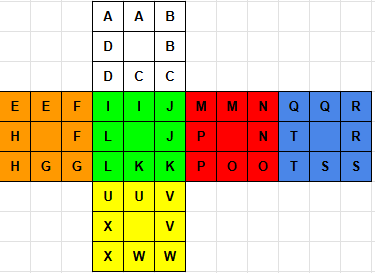

This website allows you to view and visualize the commutators I use for solving a Rubik's Cube blindfolded. I use 3-style, which is the most advanced method for blindfolded solving. If you’d like to know how this method works, check out this video.
My primary buffer is UFR (C in Speffez). Below is a diagram of the Speffez notation. Since 3-style involves cycling 3 pieces (including the buffer), that’s why you choose 2 other pieces to cycle!
Note: You may not cycle to the same piece, because that is impossible in 3-style. Examples of invalid cycles are UFR-UBL-LBU or UFR-FUL-LUF. With that said, you may not cycle to the buffer piece.
Also, here’s a link to my public spreadsheet with all my algorithms: View Spreadsheet
Edge commutators and parity algorithms are still under development and will be available soon.
Select two pieces to see the algorithm for UFR → [First Piece] → [Second Piece]. Use the left and right arrow keys to navigate between moves.